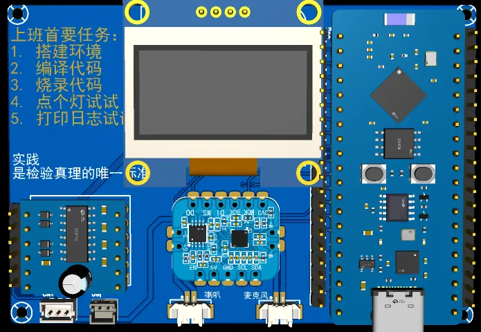

<!DOCTYPE lake>
<p data-lake-id="u3f379771" id="u3f379771" style="text-align: center"><br/></p><p data-lake-id="u3771fde1" id="u3771fde1" style="text-align: left"><span data-lake-id="uc2210071" id="uc2210071">这是一个嵌入式AI大模型对话项目，旨在用朴实无华的编程语言，手把手教会大家如何进行大模型对话。</span></p><p data-lake-id="ub9217215" id="ub9217215" style="text-align: left"><span data-lake-id="u7d7126fb" id="u7d7126fb">近年来随着AI技术的发展，语音高效对话变得越来越容易，让我们可以低成本将这项技术应用到实际。</span></p><p data-lake-id="u8cf767be" id="u8cf767be"><span data-lake-id="u52ae6035" id="u52ae6035">下图我列出了AI大模型对话的经典流程图，我们来解释一下它的过程</span></p><ol list="u8aca6d0b"><li data-lake-id="u54036509" fid="uffa42df1" id="u54036509"><span data-lake-id="uc35248ef" id="uc35248ef">我们说了句</span><strong><span data-lake-id="u37197f9e" id="u37197f9e">你好，</span></strong><span data-lake-id="u331e8227" id="u331e8227">这是一条</span><span data-lake-id="u93409fb1" id="u93409fb1" style="background-color: #DF2A3F">你好</span><strong><span data-lake-id="u505be4be" id="u505be4be" style="background-color: #FAFAFA">音频数据</span></strong></li><li data-lake-id="u845eaab7" fid="uffa42df1" id="u845eaab7"><span data-lake-id="u0a0a28d9" id="u0a0a28d9">将音频数据发送给百度/豆包这些平台，交点小钱，它会把</span><span data-lake-id="udace4e64" id="udace4e64" style="background-color: #DF2A3F">语音识别</span><span data-lake-id="ue58e0f21" id="ue58e0f21">为文本</span></li><li data-lake-id="u88fe2b99" fid="uffa42df1" id="u88fe2b99"><span data-lake-id="ua4f80c7d" id="ua4f80c7d">得到识别的</span><span data-lake-id="ubdb41ad8" id="ubdb41ad8" style="background-color: #DF2A3F">你好</span><strong><span data-lake-id="u1cf813b1" id="u1cf813b1" style="background-color: #FAFAFA">文本</span></strong></li><li data-lake-id="ue01277c4" fid="uffa42df1" id="ue01277c4"><span data-lake-id="u2892e53a" id="u2892e53a">将你好文本，发送给大模型Deepseek,它会产生结果：</span><span data-lake-id="uda682844" id="uda682844" style="background-color: #DF2A3F">你好呀，很高兴认识你</span></li><li data-lake-id="u18f36766" fid="uffa42df1" id="u18f36766"><span data-lake-id="ue86754e3" id="ue86754e3" style="background-color: #FFFFFF">获得</span><span data-lake-id="uad777fd3" id="uad777fd3" style="background-color: #DF2A3F">你好呀，很高兴认识你</span><strong><span data-lake-id="u17417d98" id="u17417d98" style="background-color: #FFFFFF">文本</span></strong></li><li data-lake-id="u92d9d54c" fid="uffa42df1" id="u92d9d54c"><span data-lake-id="u2f76e17c" id="u2f76e17c" style="background-color: #FFFFFF">将</span><span data-lake-id="u12bf3dde" id="u12bf3dde" style="background-color: #DF2A3F">你好呀，很高兴认识你</span><strong><span data-lake-id="u646ba77a" id="u646ba77a" style="background-color: #FFFFFF">文本，</span></strong><span data-lake-id="ua2c4a674" id="ua2c4a674" style="background-color: #FFFFFF">发送给</span><strong><span data-lake-id="u3251cb95" id="u3251cb95" style="background-color: #DF2A3F">语音合成</span></strong><span data-lake-id="u0bc0366b" id="u0bc0366b" style="background-color: #FFFFFF">服务器，将文本转成音频数据</span></li><li data-lake-id="u9bcfc936" fid="uffa42df1" id="u9bcfc936"><span data-lake-id="u4f503a3b" id="u4f503a3b" style="background-color: #FFFFFF">获得音频数据，在设备端播放出来即可</span></li></ol><p data-lake-id="u1df5c31a" id="u1df5c31a" style="text-align: center"></p><p data-lake-id="u51a5d3a0" id="u51a5d3a0" style="text-align: center"><br/></p><p data-lake-id="u274e7db9" id="u274e7db9" style="text-align: left"><span data-lake-id="ud2e0d487" id="ud2e0d487">学会本项目内容，大家就可以掌握市面上主流的AI大模型对话的研发能力，希望大家能好好学习，他日能成为AI嵌入式研发的中流砥柱。</span></p><p data-lake-id="u76c8d174" id="u76c8d174" style="text-align: center"></p>